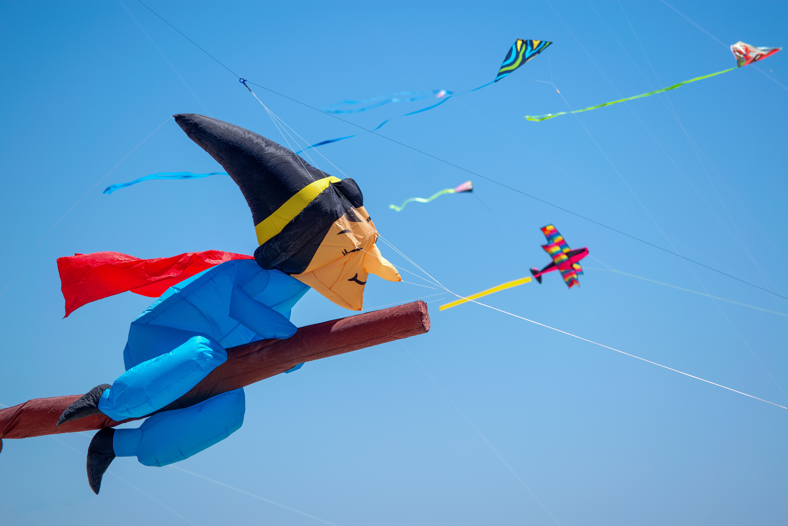
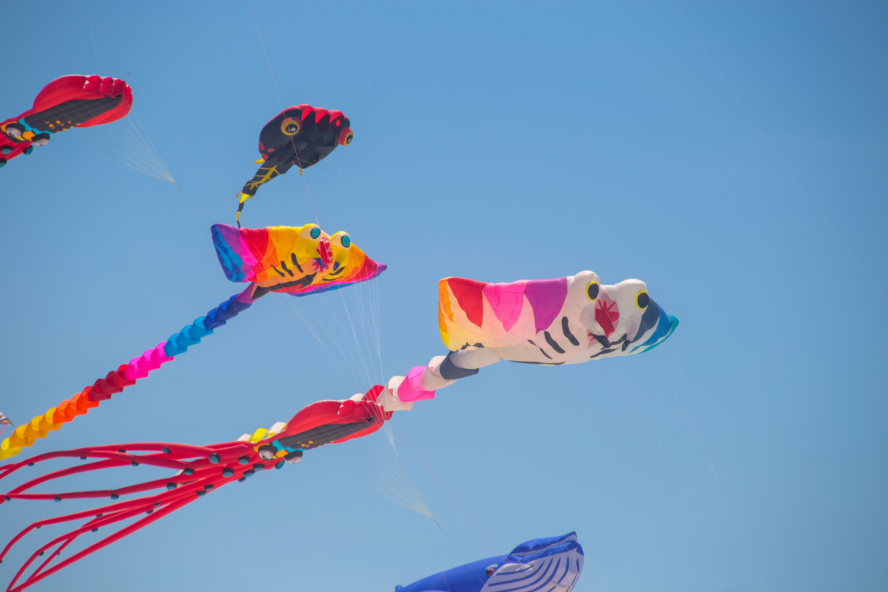
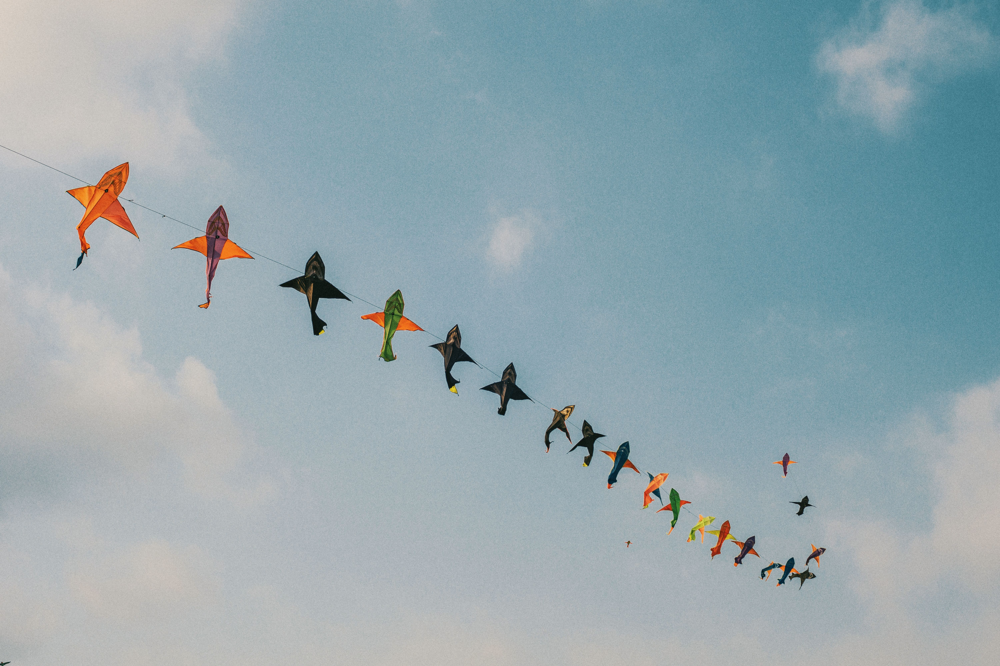
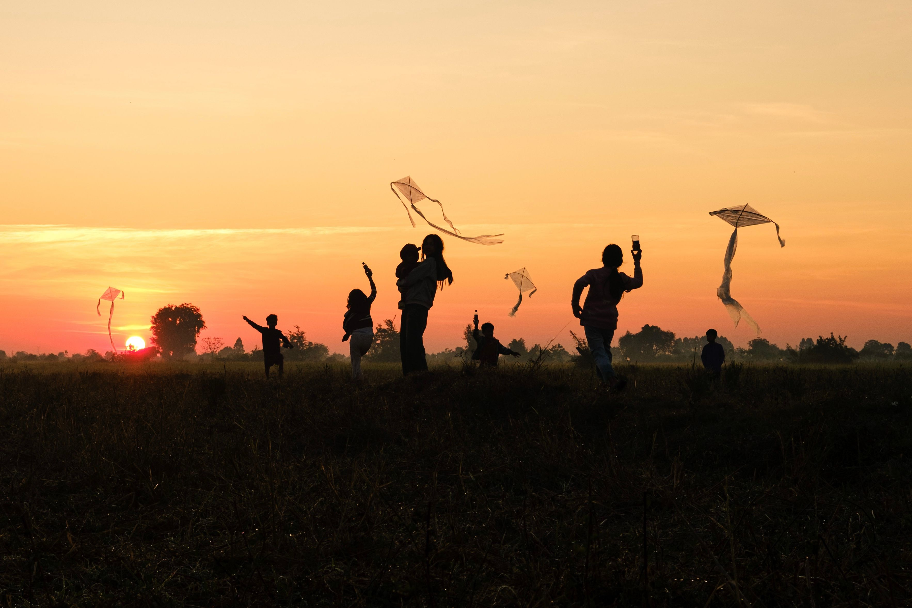

<!DOCTYPE html>
<html lang="en">

<head>
    <meta charset="UTF-8">
    <meta name="viewport" content="width=device-width, initial-scale=1.0">
    <title>kitefestival</title>
</head>

<body>
    <link rel="stylesheet" href="kitefestival.css">
</body>

</html>
<section class=" Festival">
    <div class="hero">

        <h1>The International Kite Festival </h1>

        <p>The festival is celebrated throughout Gujarat and in parts of other Indian states. In Gujarat, it is observed
            as a two-day public holiday. The second day of the celebration is known as Vasi Uttarayan or "Stale"
            Uttarayan.[1] Traditional foods commonly prepared during the festival include undhiyu, a mixed vegetable
            dish; chikki, a brittle made from sesame seeds or peanuts and jaggery; and jalebi, a deep-fried sweet.
            Markets typically see increased activity in the days leading up to the event as people purchase kites,
            string, and related supplies.</p>


        <div class="btn">
            <button>A wikimedia project</button>
            <button>Powered by Mediawiki</button>

        </div>

        <h2>Discover • Explore • Experience</h2>
    </div>
</section>
<section class="about">
    <div class="abt">
        <div class="abt-logo">

            
        </div>

        <div class="abt-content">
            <h3>History</h3>
            <p>Kites are believed to have originated in China, where early written records describe their use for
                military signaling and measurement during the Han dynasty. From East Asia, kite technology spread
                westward along trade routes such as the Silk Road. Scholars believe that kites reached the Indian
                subcontinent through contact with Buddhist missionaries and traders traveling between China and South
                Asia.</p>

            <button class="btn">Learn More</button>

        </div>
    </div>
</section>

<section class="services">
    <div class="service">
        <div class="card">
            
            <h4>Uttarayan</h4>
            <p>The Government of Gujarat promotes the festival as an international cultural event, inviting kite flyers
                from around the world to participate. In 2012, the Tourism Corporation of Gujarat mentioned that the
            </p>

            <button class="btn">Learn More</button>
        </div>

        <div class="card">
            
            <h4>Uttarayan</h4>
                <p>During the week leading up to the festival, markets experience a significant increase in kite sales,
                    with
                    large numbers of buyers and sellers trading kites and related supplies. In Ahmedabad, the Raipur
                    Darwaza
                    Patang Bazaar is among the best-known kite markets.</p>


                <button class="btn">Learn More</button>
        </div>

        <div class="card">
            
            <h4>Uttarayan</h5>
                <p>During the week leading up to the festival, markets experience a significant increase in kite sales,
                    with
                    large numbers of buyers and sellers trading kites and related supplies. In Ahmedabad, the Raipur
                    Darwaza
                    Patang Bazaar is among the best-known kite markets.</p>


                <button class="btn">Learn More</button>
        </div>
        <div class="card">
            
            <h4>Uttarayan</h4>
            <p>During the week leading up to the festival, markets experience a significant increase in kite sales, with
                large numbers of buyers and sellers trading kites and related supplies. In Ahmedabad, the Raipur Darwaza
                Patang Bazaar is among the best-known kite markets.</p>


            <button class="btn">Learn More</button>
        </div>

    </div>
</section>

<section class="Festive-India">

    <div class="FI">
        <div class="vdo">
            <iframe width="560" height="315" src="https://www.youtube.com/embed/PuRGORRUod8?si=CiUvFxnZ4qsqNVC6"
                title="YouTube video player" frameborder="0"
                allow="accelerometer; autoplay; clipboard-write; encrypted-media; gyroscope; picture-in-picture; web-share"
                referrerpolicy="strict-origin-when-cross-origin" allowfullscreen></iframe>

        </div>
        <div class="list">
            <h1>Festive-India</h1>
            <ul>
                <li>This is the first list</li>
                <li>This is the first list</li>
                <li>This is the first list</li>
                <li>this is the first list</li>

                </ul>

                </div>
                </div>

                </section>